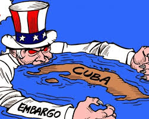

Embargo Econômico dos EUA
-- Bloqueio Econômico Imperial e a resiliência de uma ilha
Mesmo com o fim do bloco soviético, durante os governos de George Bush, Clinton e George W. Bush, radicalizam-se as posições em relação ao bloqueio econômico. A primeira iniciativa nesse sentido é a aprovação da emenda Torriceli (conhecida também como Lei Helms-Burton), proposta pelo deputado democrata do mesmo nome e sancionada sem muito entusiasmo por Bush, já pressionado por Clinton, como candidato à presidência na época. Clinton soube capitalizar eleitoralmente a emenda, angariando apoio, em parte importante, do lobby cubano no exílio. A emenda em questão ampliou as proibições, que já não estavam restritas às intermediações entre Estados Unidos e Cuba, mas foram estendidas sanções a terceiros países, no âmbito de relações triangulares. A lei Helms-Burton autorizava cidadãos dos Estados Unidos, proprietários de bens expropriados pela revolução cubana, a processar empresas estrangeiras que usufruissem das propriedades através de relações comerciais, mesmo que indiretas, também permitia que o governo barrasse a entrada, nos EUA, de empresários e executivos de tais empresas.
O embargo econômico contra Cuba foi abrandado no ano de 2000, quando o congresso dos Estados Unidos permitiu a venda de alimentos e quantidades limitadas de medicamentos. Em 2004 Cuba passou a ser o terceiro maior recebedor de alimentos exportados dos Estados Unidos, que se torna o principal fornecedor de alimentos para Cuba. Mesmo com afrouxamentos e redrudescimentos, o fato é que a lei Helms-Burton nunca foi completamente abandonada pelos EUA, mesmo depois de reconhecida a impertinência de suas proposições perante a OMC. A curiosa ameaça de uma pequena ilha do caribe ao gigante militar estadunidense segue como uma peça irônica no mundo multipolar do pós-guerra fria, segundo Sader isso ocorre:
Porque o que os imperialistas não podem nos perdoar é que estejamos aqui, o que os imperialistas não podem nos perdoar é a dignidade, a inteireza, o valor, a firmeza ideológica, o espírito de sacrifício e o espírito revolucionário do povo de Cuba. É isso que não podem nos perdoar, que estejamos aqui sob seu nariz, e que tenhamos feito uma Revolução socialista debaixo do próprio nariz dos EUA. (Sader, 1986, p.52).
Os questionamentos feitos há anos pelos cubanos seguem-se ano após ano. Será que Cuba, depois de tanta resistência pela garantia de sua soberania, depois de vários anos sobrevivendo ao embargo dos Estados Unidos, poderia se livrar de tamanha obessão dos norte-americanos? Apesar do bloqueio ter sobrevido, quase como uma velharia da retórica da guerra fria, sua renovação em discursos como do “eixo do mal” ou “celeiro de terroristas” segue sendo reatualizado pelo império, e o destino do bloqueio parece longe se resolver. Há de se lembrar que depois de anos de sabotagens e atividades criminosas promovidas pela CIA contra Cuba, fortaleceram-se internamente no congresso americano grupos cubanos-americanos de pesado lobby político.
A chegada de Obama ao poder proporcionou um momento de pequeno alívio para Cuba, a esperança do fim total do bloqueio contudo logo se desfez. A política externa de Obama acreditou opor os conceitos de isolacionismo e excepcionalismo. Ambas posturas do Estado estão ancoradas, contudo, na crença de que os EUA “estão dedicados a agir com humildade, mas com determinação quando detectam violações em algum lugar” conforme assinalou Obama em discurso oficial (CHOMSKY, 2013). A transformação em relação à política externa para Cuba se daria em função desses conceitos, num primeiro plano. Cabe ressaltar que o isolacionismo se mostrou uma doutrina pouco pragmática durante Obama, uma vez que se baseia no idealismo aplicado a condução da política externa, levando o Estado a “apagar os incêndios provocados por outros”. Nessa lógica, os Estado Unidos teriam se dedicado por quase sete décadas a fazer/manter acordos internacionais, assegurando seu cumprimento.
Para o excepcionalismo, deve-se agir em conformidade aos interesses reais dos Estados Unidos, isto é, deve-se levar em conta “nossos próprios interesses em nossa devoção às necessidades dos outros” (Idem, 2013). Para Chomsky, as duas variantes são manifestações de uma mesma doutrina transcendente: “são compreendidos como variações táticas de uma religião secular” (idem, 2013). Que, obviamente, costuma ser transgredida com regularidade, tornando os inúmeros desvios de conduta “mero abuso da realidade”. Um dos atos inesquecíveis para os cubanos foi a histórica visita de Obama a Cuba, a ilha nunca tinha recebido nenhum presidente dos EUA em seu território desde a revolução.
Segundo o site G1 “em Julho, EUA e Cuba retomaram suas relações diplomáticas e abriram embaixadas nos respectivos territórios depois de vários meses de negociações que puseram um ponto final a mais de meio século de ruptura”, mas isso não significou um ponto final ao bloqueio dos EUA a Cuba, tal passo dependia e ainda depende unicamente do Congresso dos Estados Unidos da América.

Figura 2 – Encontro do Barack Obama e Raul Castro em 2016. Fonte: https://br.pinterest.com/pin/751327150304816295/
Por outro lado, com a chegada de Joe Biden, o mais novo presidente dos EUA, há previsões de possível alívio no bloqueio depois a distensão de Obama e o recrudecimento sem precedentes de Trump. Segundo a revista Isto é, Biden irá começar uma série de reformulações sobre as medidas negativas declaradas por Donald Trump, cerca de uma semana antes de sair da Casa Branca “Trump colocou mais uma vez Cuba na lista de promotores do terrorismo, de onde Obama a havia removido, e depois sancionou o ministro do Interior”. A esperança de uma nova distensão se dá depois da ativação de um dos mais duros artigos da lei Helms-Burton, que não tinha efeito desde sua promulgação em maio de 1996.